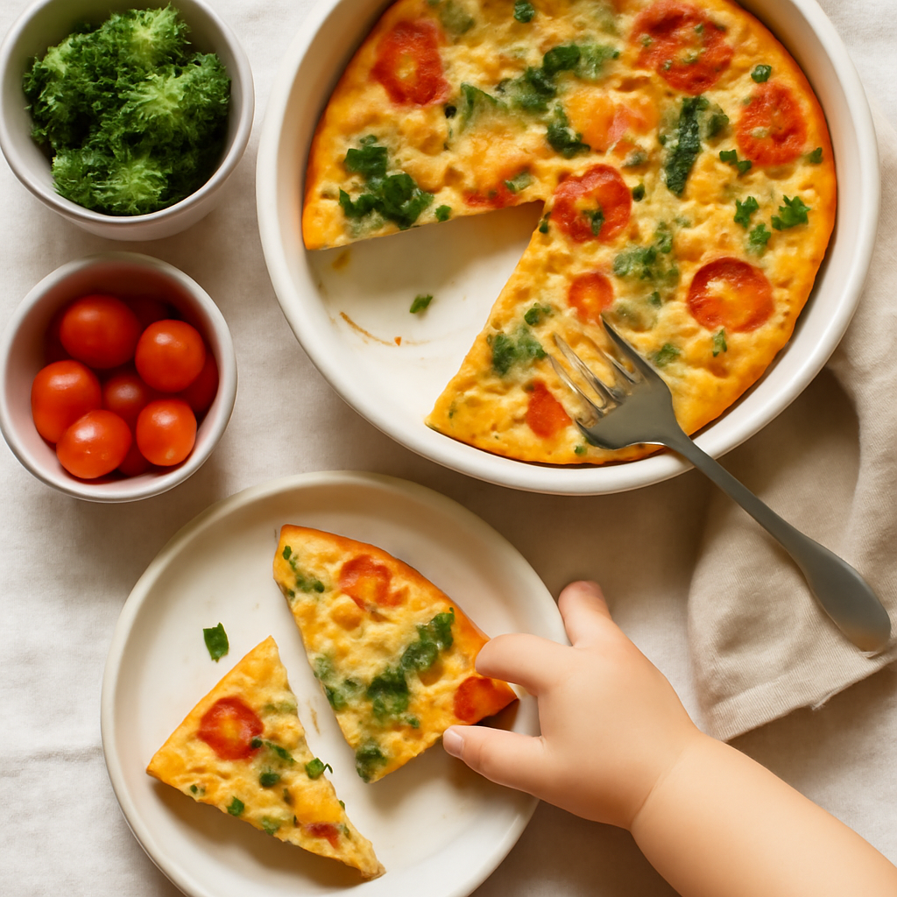

Wednesday — Oven-Baked Veggie Frittata

Cook Time:
30 minutes
Method:
oven
vegetarian
frittata
baked
healthy
Ingredients for 6
12 eggs
1 cup spinach (chopped)
1 red bell pepper (diced)
1 cup zucchini (shredded)
1/2 cup cheese (shredded)
1 teaspoon salt
1 teaspoon pepper
1 tablespoon olive oil
Instructions
Preheat oven to 350°F (175°C).
In a bowl, whisk eggs, salt and pepper. Stir in veggies and cheese.
Pour into a greased oven-safe dish and bake for 20-25 minutes.
Toddler Notes
Cut frittata into small, manageable pieces.
Ensure veggies are tender; can lightly mash if necessary.
← Back to weekly plan